| Vatican Tours |
Italy Seen Up Close.
Eleven stories from Rome and beyond, for your next journey
|
|
|
Vatican Tours Inc.
Music, gardens and the Italian table
In this edition we have gathered eleven stories from Rome and beyond: the music of St Peter’s, gardens made for popes and cardinals, Caravaggio’s Rome and a concert season worth the journey. Then we head south for buffalo mozzarella, a Roman town beneath the sea and the thirteen towns of the Amalfi Coast. Take your time, and let them inspire your next taste of la dolce vita.
|
|
|
— Sacred Music —
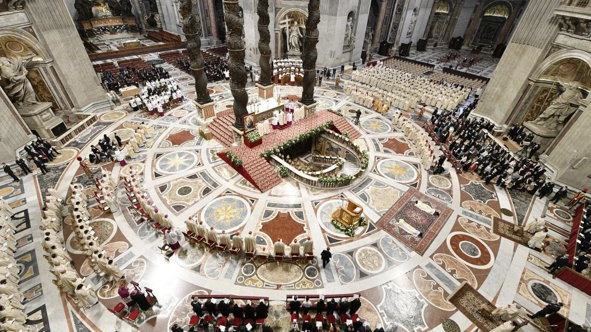
The Music of St Peter’s
Palestrina, Benevoli and Corelli
Vatican City · Renaissance & Baroque · The Cappella Giulia
Millions come to St Peter’s for Michelangelo’s Pietà and Bernini’s Baldachin, yet few stop to listen. Since 1513 the Cappella Giulia has sung in the Basilica, and three composers shaped its sound: Palestrina’s luminous polyphony, Benevoli’s music for many choirs, and Corelli’s Christmas Concerto, written for Christmas Eve. The history of St Peter’s is not only something to see. It is also something to hear.
|
|
|
— Green Escapes —
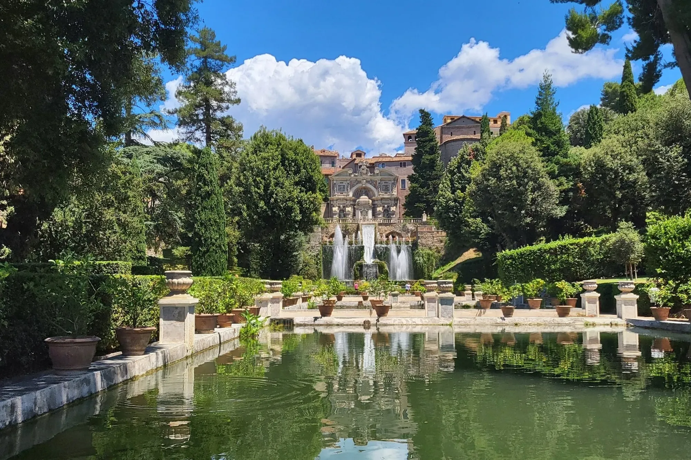
Gardens Fit for Popes and Cardinals
Four green escapes from Rome
Vatican Gardens · Castel Gandolfo · Tivoli · Bagnaia
For centuries, the princes of the Church left the heat and noise of the city for fountains, shady oaks and cool terraces. From the Pope’s own backyard behind St Peter’s to the gravity-fed fountains of Villa d’Este and the quiet perfection of Villa Lante, today you can walk where they did. Rome’s holiest corners aren’t all indoors.
|
|
|
— Art & History —
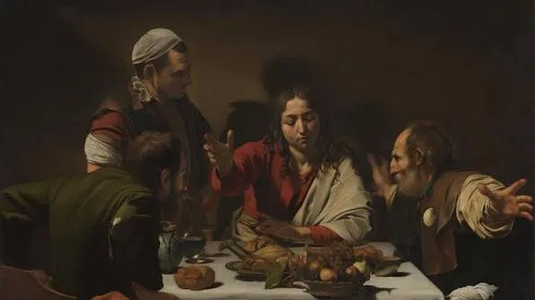
In the Footsteps of Caravaggio
Hidden gems and iconic masterpieces
Rome · Churches · Palaces · Galleries
A painter of scandal, violence and genius, Caravaggio came to Rome as a young man and changed painting for ever with his bold play of light and shadow. Many of his masterpieces still hang in the very churches and galleries that commissioned them, while others wait in quieter corners, such as the Madonna of the Palafrenieri within the Vatican. A city of contrasts, just like the artist himself.
|
|
|
— Music & Architecture —
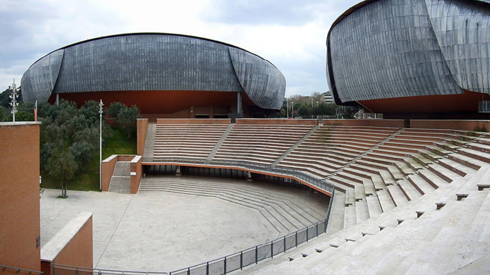
Renzo Piano’s Auditorium
And the sound of Santa Cecilia
Rome · Parco della Musica · The 2026/27 Season
Three lead-grey shells rise from a park north of the centre, each hall tuned for a different kind of music. Home to the Orchestra di Santa Cecilia, now led by Daniel Harding, the Auditorium marks 200 years since Beethoven’s death in 2027, with Martha Argerich, Daniil Trifonov and a Joe Hisaishi finale among our picks. A season worth planning a trip around.
|
|
|
— Food & Wine —
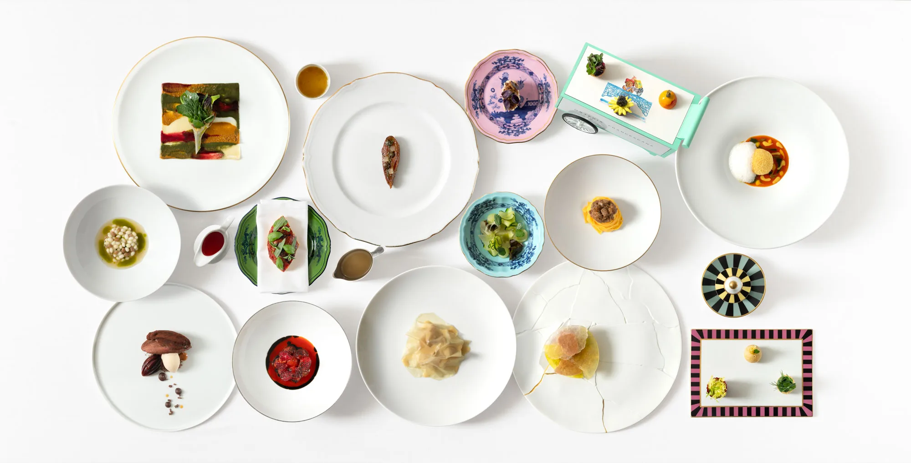
Osteria Francescana
A restaurant worth driving to
Modena · Emilia-Romagna · Three Michelin Stars
Behind a discreet door on a narrow lane in Modena lies one of the most celebrated dining rooms on the planet. Massimo Bottura takes the sacred dishes of Emilian tradition and makes them taste even more like themselves. Inside: the menu, how to book, and his recipe for the Five Ageings of Parmigiano Reggiano. Some meals are worth a detour. This one is worth the whole trip.
|
|
|
— The Italian Table —
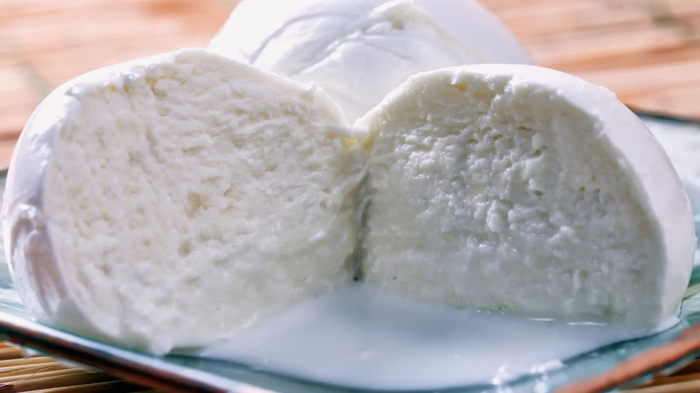
Italy’s Best Mozzarella
A pilgrimage to Tenuta Vannulo
Paestum · Campania · A Family Farm
There is mozzarella, and then there is mozzarella eaten an hour after it was made, on the farm where the buffalo live. A short drive from the Greek temples of Paestum, the Palmieri family makes theirs only from their own herd’s milk, and sells it almost entirely on site. Bring an appetite, and arrive early.
|
|
|
— Hidden Gems —
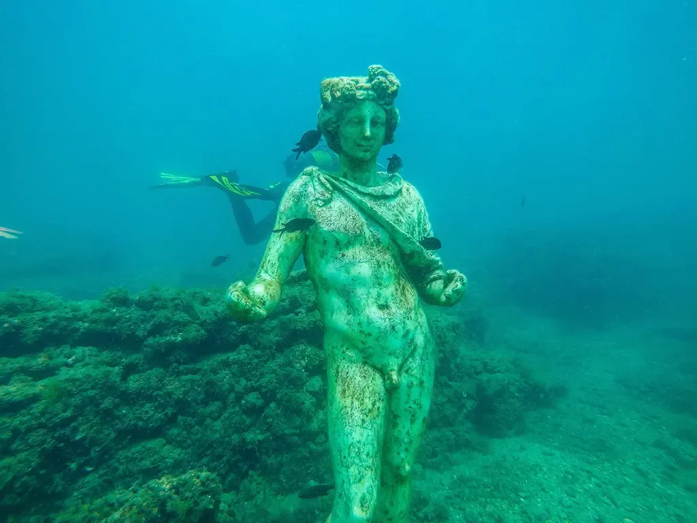
Baia
The Roman resort you visit in a wetsuit
Campi Flegrei · West of Naples · Underwater Park
Two thousand years ago, this was where emperors and senators came to be seen. Then the volcanic ground beneath it sank, slowly, over centuries, and the sea moved in over its villas, mosaics and baths. Today you glide above them by glass-bottom boat, with a snorkel, or on a guided dive. Most ancient sites ask you to stay behind the rope. This one asks you to bring fins.
|
|
|
— Coastal Italy —
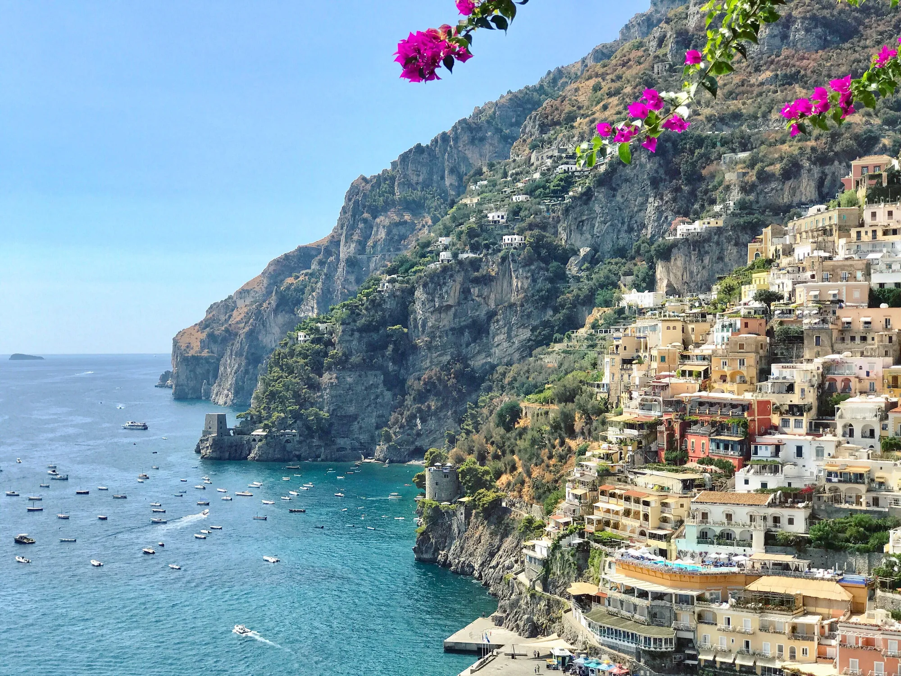
The Towns of the Amalfi Coast
So much more than Positano
Campania · Thirteen Towns · One Coastline
Positano and Amalfi take the lion’s share of visitors, but thirteen towns line this coast, each with its own character: tiny Atrani, the smallest municipality in Italy; romantic Ravello and its Terrace of Infinity; the fishing boats of Cetara; the ceramics of Vietri sul Mare. Here’s what to expect from each.
|
|
|
— Where to Stay —
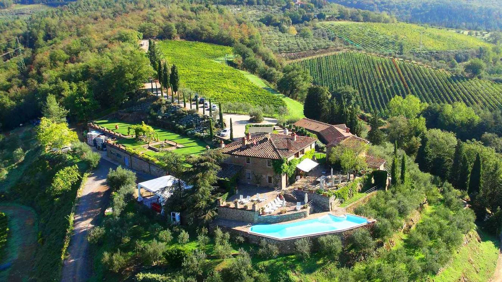
Tuscany’s Vineyard Hotels
Eye on Italy: the best of the international press
Chianti · Val d’Orcia · Maremma
Historic castles above the Val d’Orcia, Chianti wine estates and Maremma retreats: The Times picks twenty of Tuscany’s finest vineyard hotels. Short on time? We also arrange private winery visits as day trips from Florence or Rome. Sometimes one memorable day is all it takes.
|
|
|
— Wine Country —
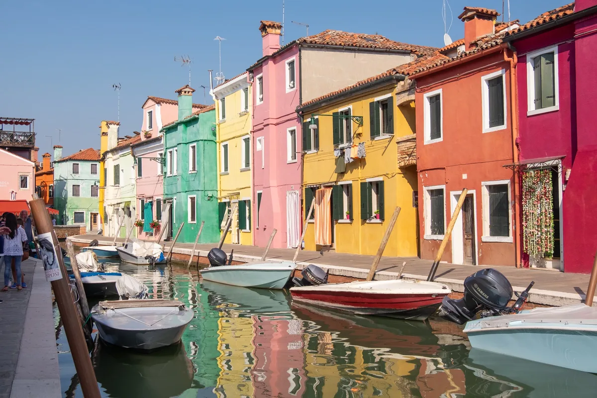
The Wineries of the Venetian Lagoon
A different Venice
Venice · Mazzorbo · Burano
Few visitors think of Venice as wine country, yet for centuries the lagoon islands fed the city. On Mazzorbo, beside a medieval bell tower, Dorona, the golden grape of the Venetian Republic, grows again in salty sand. The wine is amber, a little salty, and made in tiny quantities. Salt marshes instead of crowds, birds instead of selfie sticks.
|
|
|
— Staying in Rome —
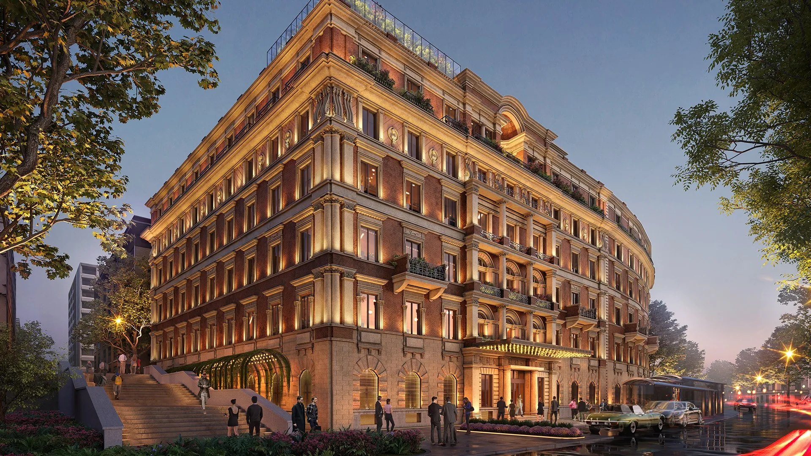
Affordable Hotels in Rome
Fourteen favourites under £150, chosen by The Times
Trastevere · Monti · Centro Storico
From small family-run hotels to newer, glossier options from cool brands: a secret rooftop Spritzeria a short walk from the Pantheon, a tower room with views over the Circus Maximus, and freshly baked pastries for breakfast in Trastevere. Twenty-eight centuries of history, and a comfortable bed at the end of the day.
|
|
|
— You’re on the List —
Please Allow Us to Stay in Touch with You
Thank you once again for choosing Vatican Tours Inc. for your past travel to Italy.
We truly appreciate the opportunity to have been part of your journey. We would love to stay in touch and, with your permission, send you our newsletter once every two or three months. Each edition features travel inspiration, hidden gems, and ideas from across Italy to help make your next visit even more memorable.
We look forward to welcoming you back to Italy.
|
|
Piotr Zalewski
CEO, Vatican Tours Inc.
Rome, Italy
|
|
|
|